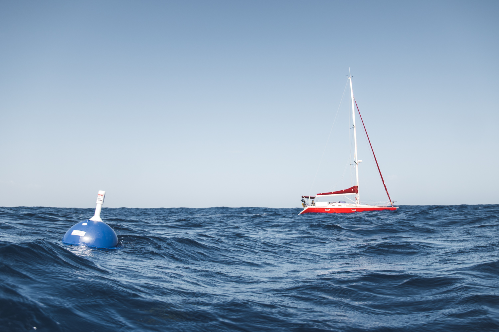
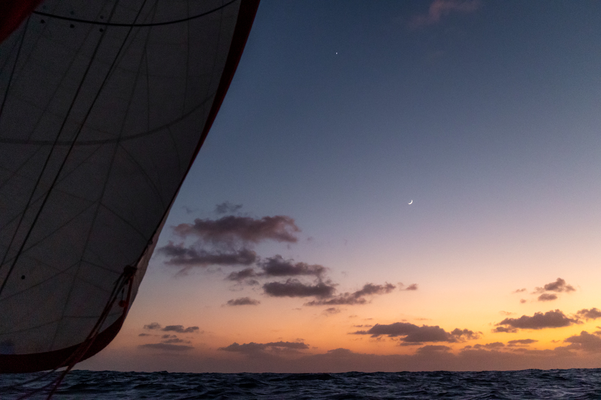
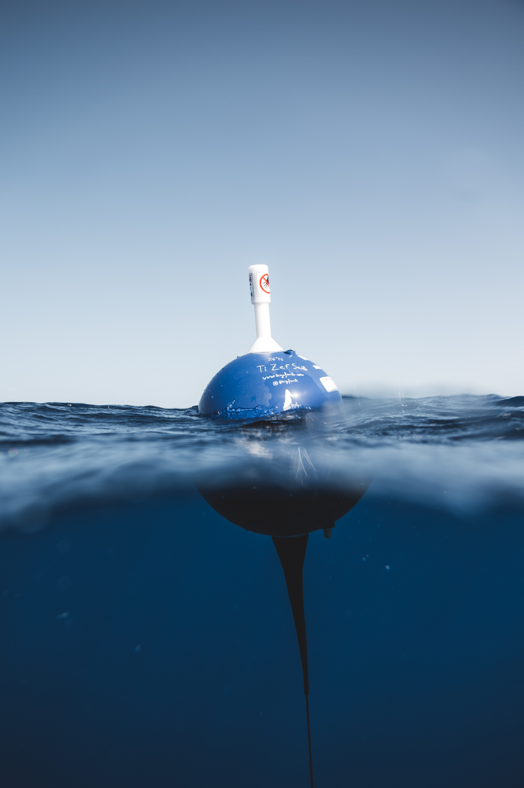
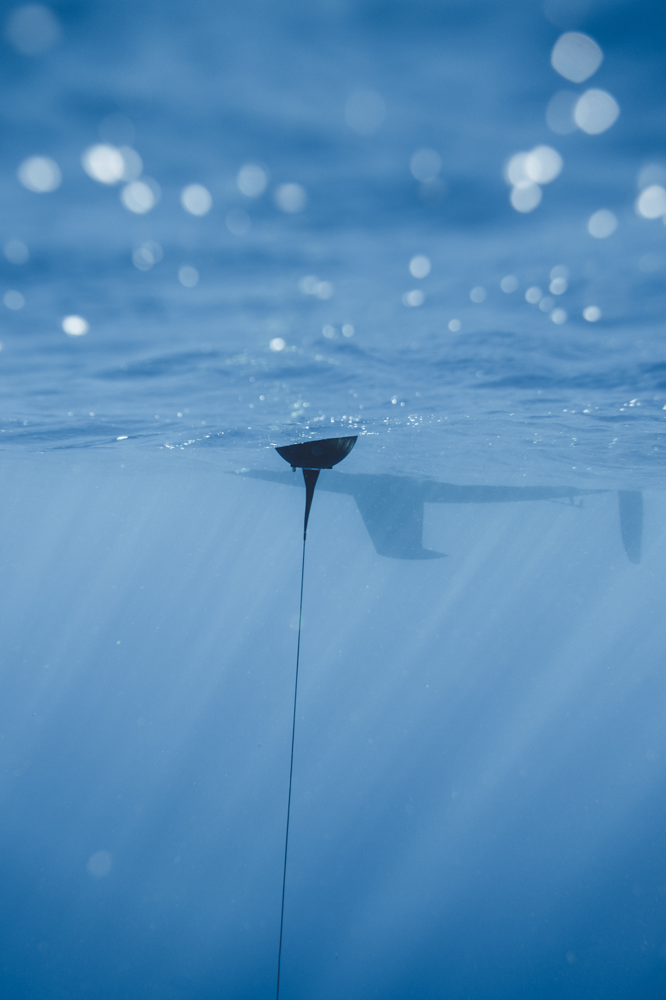
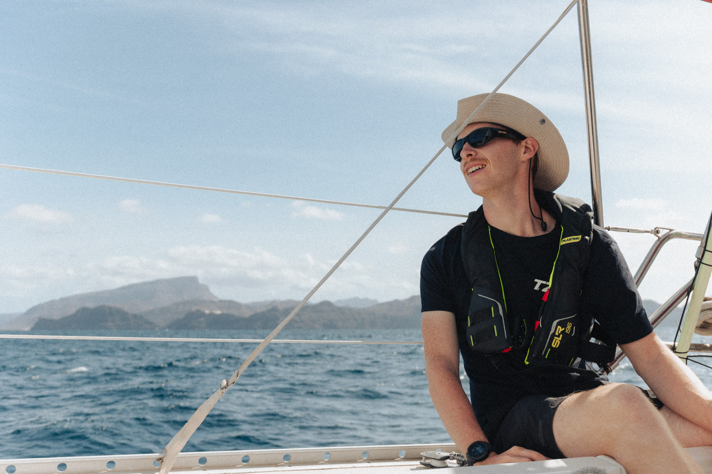
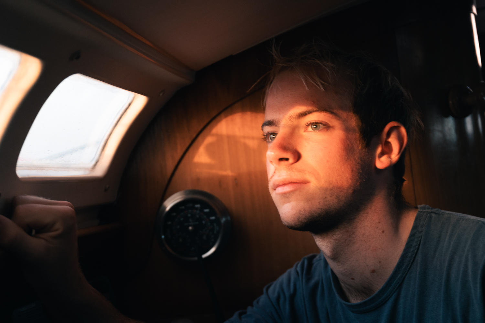
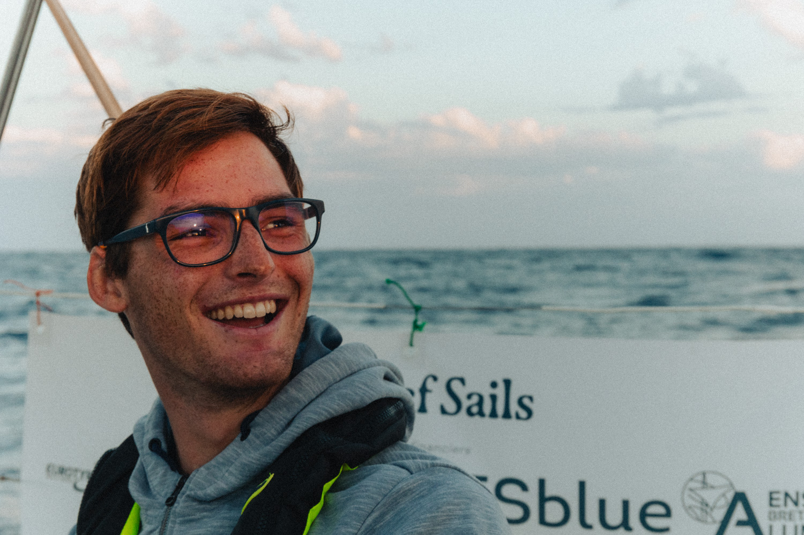
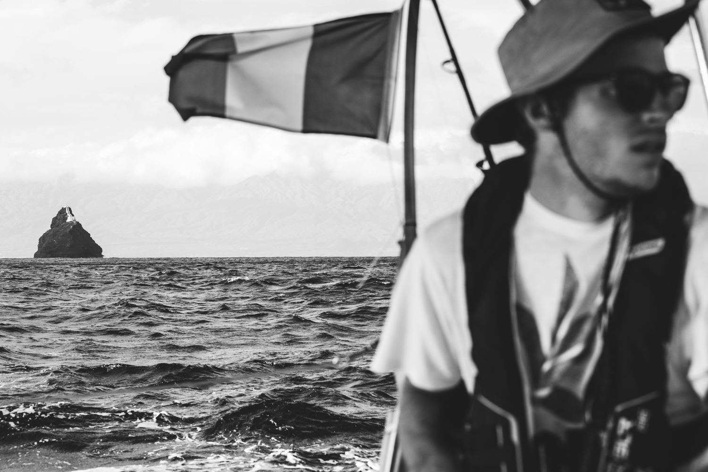
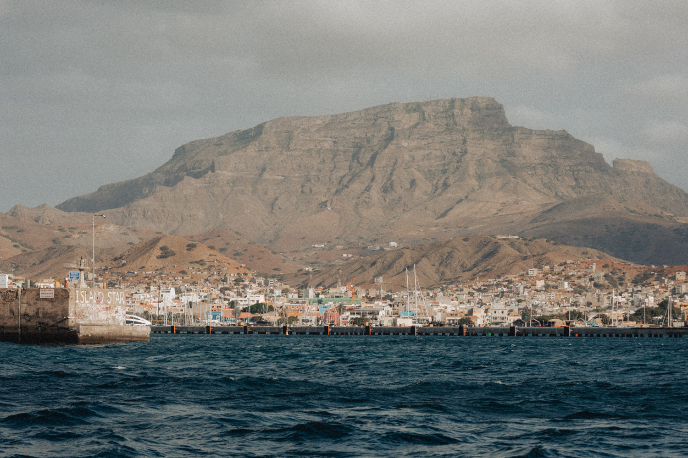

Extrait de mon journal de bord entre le 2 et le 7 décembre 2024.
C’est peut-être un peu tard mais ça y est, j’écris mes premières lignes dans ce carnet !
Nous avons quitté l’île de El Hierro aux Canaries en début d’après-midi ce dimanche, après avoir mangé la dorade coryphène pêchée par Féfé (sa première !!). Depuis, top conditions. Sous spi, une dizaine de nœuds de vent et pas de mer. Le bateau glisse et est à plat ! C’est même plus confortable que les mouillages des Canaries !
Juste devant nous, Camogli est parti 3h en avance. Malheureusement, il semblerait qu’on soit trop dans l’ouest pour les voir.
Le bateau est à plat entre 6 et 7 nœuds, c’est un régal !
Ça y est, on a déchiré notre spi… Après une première petite déchirure ce matin en l’affalant pour déposer la première bouée météo, il s’est ouvert en deux ce soir.
Reprenons dans l’ordre. Ce matin, nous sommes arrivés à la latitude 26°N, latitude à laquelle nous devions déposer la première des deux bouées météo confiées par météo France. Nous avons donc tout affalé et mis le moteur pour être plus manœuvrant et permettre à Clément de se mettre à l’eau pour faire des images. En affalant, lorsque je me saisis du spi, il se déchire sur environ 5cm dans la partie basse de la voile.

Nous organisons la dépose de la bouée ainsi que son suivi en images avec 4 points de vue simultanés. Nous reprenons ensuite notre route tranquillement sous génois seul après deux heures à tourner en rond au moteur. C’est bien moins confortable que la navigation sous spi depuis la veille. Dans l’après-midi, nous observons pas mal d’oiseaux, nous mettons donc les lignes à l’eau… Jusqu’à perdre Zack.
Zack, il faut que je vous le présente. Zack c’est notre leurre de compète (Zack c’est ce qui est écrit dessus). Il a pêché presque tous les poissons jusqu’à maintenant. Il souffre pas mal à force de se faire attaquer… Du coup, il n’a plus d’yeux, des balafres à travers tout le corps et il commence à se fissurer sur sa partie arrière. Nous avons aussi dû changer ses hameçons qui s’étaient déformés sous la tension avec les poissons.
Le meilleur pêcheur du bord, notre cher Zack, a donc finit sa vie de bien belle manière en cassant sous la force de l’attaque d’une dorade coryphène. Son corps qui était déjà bien fragilisé s’est cassé, nous avons donc pu récupérer la tête restée accrochée à la ligne… C’est la fin d’une époque. Nous gardons ce morceau qui reste exposé à coté du mur des photos dans le bateau !
Avec Clément, nous réparons la petite déchirure du spi qui est renvoyé en fin d’après-midi. Le bateau bombarde alors entre 7 et 10 nœuds avec bien plus de confort que sous génois seul. Le vent et la mer sont pourtant montés, nous avons désormais entre 15 et 20 nœuds de vent, la grand-voile a deux ris en prévention.
Nous avions prévu de garder le spi jusqu’à la fin du repas pour être plus confort et de l’affaler ensuite pour être plus tranquille en quart seuls pendant la nuit.
Les gars sont en train de servir le repas, un super filet mignon aux lentilles, lorsque le bateau accélère dans une vague. Je sens la gite augmenter et je saute sur le winch de piano tribord sur lequel se trouve le frein de bôme (système qui permet d’éviter que la grand-voile empanne à un moment non choisi) afin de pouvoir choquer complètement la grand-voile et éviter que le bateau ne se retrouve couché travers au vent. Une fois sur le winch, dans le noir (il fait nuit et dans la précipitation je n’ai pas eu le temps d’allumer ma frontale), je m’emmêle un peu les pinceaux. Malgré tout, le mouvement du bateau est très doux et la gite est montée très progressivement, jusqu’à ce que j’entende un long bruit de déchirement de tissus.
Je comprends aussitôt que le spi s’est déchiré. Le bateau retrouve son assiette et je hurle aux gars que le spi s’est déchiré. Quelques secondes plus tard, le temps d’allumer ma frontale (enfin), je constate que le spi est ouvert en deux avec un morceau pendu à la drisse et l’autre au tangon. je hurle alors une seconde fois pour leur confirmer « On n’a plus de spi !!! ». Je change le point d’attache de ma longe pour m’accrocher à la ligne de vie et je cours à l’avant pour essayer d’attraper les morceaux de spi avant que la situation ne s’envenime. Arrivé devant, ma priorité est de récupérer la partie haute qui danse dans le vent au bout de la drisse comme un fantôme, avant qu’elle ne devienne inaccessible. Je me rends tout de suite compte que le morceau est évidemment trop haut et qu’il faut d’abord que je choque la drisse. Aller-retour express au piano. Lorsque je reviens, je constate que la partie basse du spi est en train de tomber à l’eau et commence à « chaluter » (traîner dans l’eau). Je récupère donc rapidement ce grand morceau pour le poser sur l’étrave du bateau. Dans le même temps, la partie haute s’est enroulée sur l’étai, puis déroulée et se trouve actuellement déventée derrière la grand-voile. Une occasion en or qu’il ne faut pas louper. Je me précipite dessus et l’attrape. Félicien fait de même et arrive depuis le cockpit. Il récupère alors ce morceau et je retourne à l’avant afin de finir de récupérer la partie basse encore sur l’étrave qui risque de s’envoler ou de tomber à l’eau.
Le bateau est resté assez calme tout au long de la manœuvre et la plage avant n’est pas sous les vagues. J’enlève les écoutes et récupère le tissu que je ramène au cockpit. À ce moment-là, les gars ont déjà rangé la partie haute et Clem propose « On déroule le génois et on affale la grand-voile » pour continuer la nuit sous génois seul.
Je retourne alors à l’étrave pour ranger le tangon et récupérer une écoute de spi que nous utilisons sur le génois lorsqu’on est dans la configuration génois seul au portant. Le génois est alors déroulé et la grand-voile affalée. À peine quelque minutes après la perte du spi, le bateau était de nouveau sur sa route vers le Cap-Vert. Cette fois plutôt autour de 6 nœuds qu’autour de 9 nœuds.
Lorsque je reviens du pied de mat où j’étais pour affaler la grand-voile, le cockpit est vide. Félicien et Clément sont déjà retournés à l’intérieur pour s’occuper du repas. En effet, ils étaient en train de servir les assiettes au moment de l’incident et ils ont dû tout laisser en plan. Dans la précipitation, la marmite de lentilles posée à la vas-vite sur la gazinière n’a visiblement pas apprécié d’être abandonnée et a décidé pour se venger de déverser son contenu derrière la gazinière… Un bon ménage en perspective !
Il est maintenant 2h27 UTC et le bateau file toujours sous génois seul, autour de 7 nœuds avec 20 nœuds de vent. Le bateau roule énormément, c’est un enfer pour dormir.

Hier a été une journée sous le signe de la cuisine ! Quel plaisir de voir tout l’équipage à l’aise pour cuisiner à l’intérieur du bateau en jonglant avec les casseroles et les plats entre les coups de gite et contre gite. Le bateau est encore très rouleur. Nous continuons notre route sous génois seul depuis la perte du spi et le bateau n’est pas très équilibré dans cette configuration. Nous attendons que le vent redescende un peu pour renvoyer la grand-voile. Pour l’instant il y a toujours entre 20 et 24 nœuds de vent.
Avant de lancer l’après-midi cuisine, nous avons réussi à faire un live Instagram pour la mise à l’eau de la seconde bouée météo ! Pas facile niveau logistique. Nous avons dû attendre plus d’une heure avant que la connexion internet ne s’établisse!


Coté cuisine, c’est donc Féfé qui a lancé les hostilités avec un succulent gâteau aux pommes préparé pendant ma sieste dans le carré… Que de bonnes odeurs ! J’ai donc profité que le four soit chaud pour enchainer sur un pain qui semble être mon plus aboutit jusqu’à présent. Je suis plutôt content de moi ! Clem a ensuite pris le relai pour une de ses spécialités, la tarte aubergine, tomates & chèvre. Le tout accompagné de pâtes au pesto pour les gros mangeurs.
Dans le quart précédent, Félicien s’est fait une belle frayeur en croisant de très près une bouée semble-t-il à la dérive au milieu de rien. Je le laisse vous raconter cette histoire:
“ Je ne sais pas pourquoi mais ce soir j’ai la bougeotte. Je change de place dans le cockpit toutes les cinqs minutes. La mer est belle et le vent souffle régulièrement. J’observe les étoiles filantes et tente d’identifier les constellations. Les voiles se tiennent et ne nécessitent pas de réglage particulier. Une démangeaison dans les jambes m’incite à me hisser debout contre la capote. Je vois alors au loin un éclat blanc. Tiens une étoile sur l’horizon, étrange. J’ai fait mes vérification AIS régulièrement (système permettant de voir les bateaux autour de nous) et suis donc intrigué de voir une lumière sans trace sur l’écran. Les distances sont difficiles à évaluer de nuit, je démarre donc le radar. Le temps qu’il se lance je reprends ma position d’observation. Mon sang se glace. Je vois distinctement les éclats sur notre route, à une distance dangereusement faible. Je me précipite à l’intérieur chercher le projecteur, et remonte aussi rapidement regarder ce que le radar indique. Aucune trace. Je me relève pour voir comment notre route évolue. Impossible de retrouver les éclats. Je saute pour voir s'ils ne sont pas masqués par le génois. Quand je reviens au vent du bateau, les voilà qui réapparaissent à une centaine de mètres sur notre bâbord. La collision n’aura pas lieu alors j’essaye de découvrir ce qui émet ces flash. La portée du projecteur est tout juste suffisante pour révéler un mat entre deux vagues. J’évalue sa longueur à un mètre et la lampe culmine à deux mètres. Le tout est posé sur un objet de taille imposante. Plus de peur que de mal, le reste de mon quart sera constitué de vérifications nerveuses du radar, d’illusions visuelles et cogitation sur des scénari de percutions. Je suis content de réveiller Loann pour qu’il me relaye.”

Hier j’ai barré plus de deux heures pendant mon quart. C’était surtout motivé par l’envie de préserver les batteries en éteignant le pilote automatique mais c’était aussi un bon moyen de garder un œil attentif sur l’horizon après la mauvaise rencontre de Félicien.
Les journées et les nuits se ressemblent depuis la perte du spi. L’état de mer s’améliore même si les vagues restent importantes. La navigation sous génois seul est loin d’être passionnante, pour ne pas dire ennuyante… Le vent devrait mollir et refuser d’ici le Cap-Vert, ça sera alors l’occasion de renvoyer la grand-voile et de se remettre à naviguer réellement. Point positif, on a pas mal de pistes pour trouver un nouveau spi !
Cette nuit encore nécessite une attention particulière car nous traversons une zone dans laquelle se trouve une grande bouée météo ancrée. Malheureusement, sa position exacte n’est pas connue et cette bouée n’a pas d’AIS…
Je ne traîne donc pas et je retourne regarder devant.

La nuit précédente a été très longue, toujours sous génois seul, vraiment ennuyant comme manière de naviguer. En fin de nuit, Clément a enfin pu renvoyer la grand-voile, retrouvant ainsi un bateau plus équilibré, plus stable et qui file sur sa route ! Ça s’est d’ailleurs ressenti dans les réveils tardifs de l’équipage. Ça faisait du bien de pouvoir enfin dormir confortablement.
Première du voyage, en me réveillant de ma sieste, j’ai trouvé les gars en pleine partie d’échec !
Félicien nous a ensuite régalé avec une nouvelle recette testée sur une dorade coryphène pêchée la veille au coucher de soleil. Sur la deuxième partie de journée, le bateau a retrouvé de belles moyennes de vitesse qui nous font espérer ne pas arriver trop tard demain à Mindelo. Ou en tout cas arriver avant la nuit et la fermeture du port pour espérer avoir enfin une douche !

Cette nuit, la dernière normalement, est placée sous le signe de l’orage. Félicien m’a réveillé il y a un peu plus de deux heures avec un ton légèrement différent de d’habitude. En effet, il y avait plusieurs croisements à gérer à l’AIS. Des flashs lumineux ainsi que des éclairs étaient visibles autour du bateau. Au bout de quelques minutes, nous voyons nettement les nuages d’orage au radar et le tonnerre commence à gronder. Nous longeons le premier nuage et commençons à longer le deuxième lorsqu’un troisième apparaît sur notre route et semble fusionner avec celui que nous longeons. Nous tentons alors de nous en écarter mais très rapidement, nous nous retrouvons au milieu du nuage. Nous nous remettons alors sur notre route en espérant sortir au plus vite de la zone ! Les vestes de quart font leur retour, malgré la chaleur, pour nous garder au sec sous la pluie d’orage qui s’abat. Nous sommes tous les deux sous le bimini à l’arrière du bateau à attendre que ça passe, tout en surveillant le radar et l’AIS. Au bout de deux heures, la situation semble se stabiliser. Des flashs orageux sont toujours visibles dans le ciel autour du bateau et de temps en temps des éclairs dans le sillage.
Nous sommes arrivés à Mindelo sur l’ile de São Vincente au Cap-Vert le vendredi 6 décembre, peu après 17h soit une traversée entre El Hierro et Mindelo bouclée en 5 jours et 4 heures.

Les dernières heures ont de loin été les plus mouvementées de la traversée. Je vous ai laissé hier au milieu de mon dernier quart avec les orages qui s’étaient éloignés… Ça n’a duré qu’un temps. A la fin de mon quart, lorsque je suis allé réveiller Clément, un nouveau groupe de nuages orageux a commencé à apparaître sur le radar, pile sur notre route bien évidemmet !
En vain, nous avons essayé de les éviter. En quelque minutes seulement, nous étions complètement cernés par le nuage avec des éclairs partout autour de nous ! Le vent est devenu erratique, baissant en intensité et devenant très instable en direction. Nous avons donc mis en marche le moteur et roulé le génois pour faire route directe vers Mindelo en sortant au plus vite de cette zone dangereuse.
Vers 8h du matin nous étions enfin sortis de la zone, sans encombre, avec juste une belle frayeur et une petite dette de sommeil. Le reste de la journée, le vent monte et le bateau accélère. L’arrivée se rapproche à grande vitesse même si la direction du vent nous oblige maintenant à tirer des bords. En approchant du passage entre São Vincente et Santo Antão, le bateau enchaîne les surfs dans un vent forcissant de plus en plus. Les vitesses sont assez dingues et les lignes de pêche encore à l’eau nous le font bien comprendre. L’une vrille complètement avec son leurre qui s’emmêle et l’autre casse tout simplement. Nous n’aurons donc malheureusement pas de poisson pendant notre escale à Mindelo.
Le vent accélère énormément entre les deux îles, nous verrons s’afficher jusqu’à 35 nœuds. Un fort courant nous entraîne lui aussi vers le sud. Les vagues sont courtes et creuses, elles nous arrosent de temps en temps en claquant contre le franc-bord du bateau.

Une fois dans la baie, le vent reste fort mais la mer se calme complètement. Après une courte attente, les marinieros nous indiquent une place où s’amarrer. Un large espace entre deux outremer 45 (des grands catamarans). Le vent apporte sa touche épicée à la manœuvre d’entrée dans la place mais nous finissons par réussir à bien amarrer Tsanteleina.
Ça y est, nous avons quitté l’Europe pour de vrai. Un nouveau chapitre de notre aventure s’ouvre…